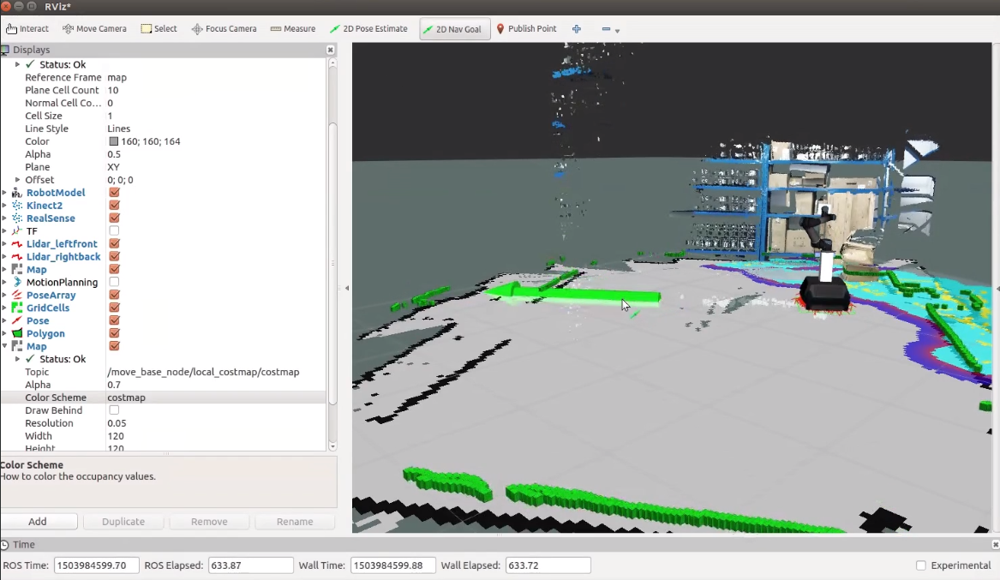
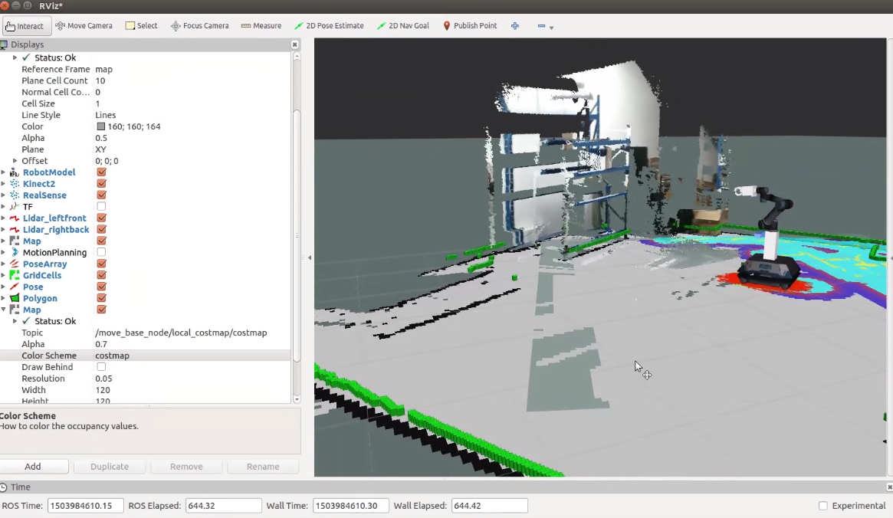

Navigation Tutorial¶
MOMA is shipped with configurations of ROS Navigation Stack. You can find those configuration files in /home/moma/moma/moma_ros/src/moma_tutorials/moma_navigation/moma_2dnav.
Build a Map¶
When building a map, using only one lidar of MOMA is enough. You can choose gmapping to do this work:
$ rosrun gmapping slam_gmapping scan:=base_scan_leftfront
or
$ rosrun gmapping slam_gmapping scan:=base_scan_rightback
After mapping, you can save the map using map_server:
$ rosrun map_server map_saver -f mapname
This command will save the map at the location where the command is runned.
Navigation¶
After building a map, you can load the map with:
rosrun map_server map_server mymap.yaml
The mymap.yaml should be at the location where the command runs.
Now you can do navigation with:
$ roslaunch moma_2dnav move_base.launch
Draw a goal on RVIZ, and see the actions of MOMA. Don’t forget to grasp the industrial controller in hand.

